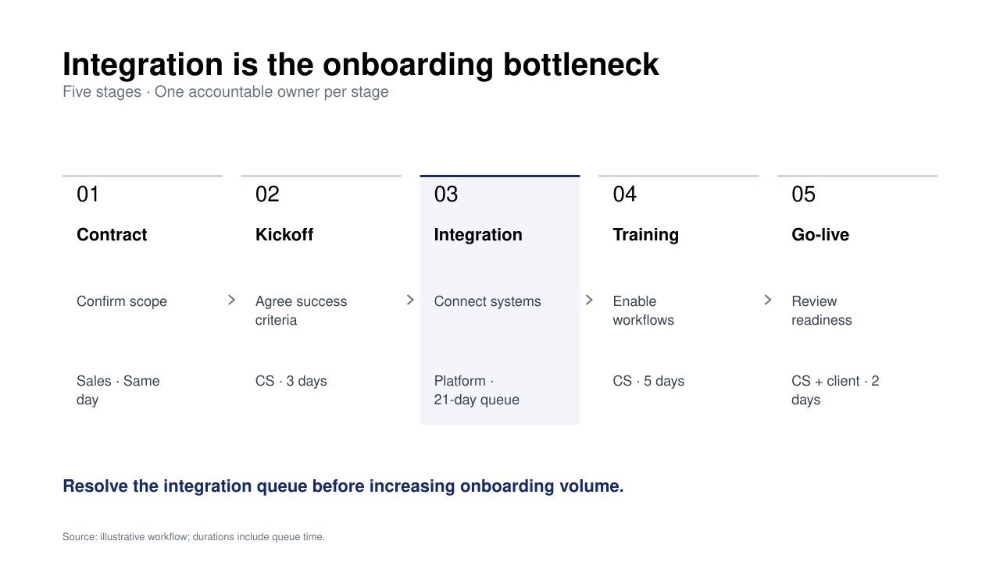

CLAUDE CODE・CODEX・CURSOR用の無料スキル
メモを、
メモを、
コンサル型スライドに。
01 / 入力メモ
Q4の役員会資料 ARRは$10Mから$15Mへ 新規エンタープライズ +$3M 既存顧客の拡大 +$2.5M 解約 -$0.5M 成長の要因を伝えたいサンプルの入力
完成スライド（英語）スライドを開く ↗

02 / 入力メモ
ARR $10M → $15M（+50%） 新規エンタープライズ +$3M 全6セグメントで採用率上昇 ヘルスケアは28% 供給能力は契約済み案件の60% 役員会は何を優先すべき？サンプルの入力
完成スライド（英語）スライドを開く ↗

03 / 入力メモ
SSO：効果大、工数小 一括出力：同じく優先 モバイル：工数大 ダッシュボード：中程度 ダークモード：効果小 旧システム移行：工数大、効果小 どこに注力すべき？サンプル入力 · 配置は説明用の推定値
完成スライド（英語）スライドを開く ↗

実際のレンダラー出力 · サンプルデータ元のJSONを見る ↗
22種類の図表・スライド
6種類のデッキ雛形
4つの出力形式
MIT利用・改変が可能
一枚の図表から、資料全体へ
導入から意思決定まで、ひとつの流れに。
全9枚の役員会デッキをご覧ください。すべてこのスキルから生成しています。
そのまま使える、実際の成果物
会議に持っていける、完成形まで。
役員会で成長戦略を説明するスライド。経営会議で意思決定を進める一枚資料。HTMLで作り、PDFに仕上げた実物をご覧ください。
HTMLで作る。PDFで届ける。構成と図表をAIと磨き、ブラウザで確認して、完成した資料を出力。
コンサルティング資料のデザイン調査を見る ↗ビジュアルライブラリ
すべての実例 ↗伝えたいことに合う、一枚を。
成長レビュー、ベンダー比較、ロードマップ。問いに合った図表から始められます。
編集できる図解テンプレート
図解を選んで、自分の内容に。
JSONをダウンロードし、インストールしたスキルのフォルダに置きます。ラベルとデータを編集して、下のコマンドを実行してください。SVGのプレビューは原寸で開けます。

業務フロー
工程・担当・ボトルネックを伝える。
{kind=link}
python3 scripts/render_slide_spec.py onboarding-flow.json -o flow.svg優先順位マトリクス
選択肢と優先順位を、ラベルの重なりなく比較する。
python3 scripts/render_slide_spec.py product-priority-two-by-two.json -o matrix.svgプロジェクト計画
作業・期間・意思決定のタイミングを揃える。
{kind=link}
python3 scripts/render_slide_spec.py pmo-rollout-gantt.json -o roadmap.svg一枚ごとに、伝える結論を。
結論を示す見出しで、データと意思決定をつなぎます。それぞれのスライドに、ストーリーの中での役割があります。
図表の数値を、確かめられる。
図表は読みやすいJSONから描画。入力値と前提を確認し、自分のデータに更新できます。
完成した資料を、そのまま共有。
HTMLでプレゼン、印刷でPDF、SVGをPowerPointへ。ローカルの描画にはAPIキーは不要です。
パイプライン
手元のメモから、次の会議まで
- 01 散らかったメモ、数値、文章
-
02
スライドspec（JSON） - 03 SVGスライド
- 04 アニメーションHTMLデッキ／PDF
単一ファイルのPythonスクリプト、標準ライブラリのみ。specはコードのように版を重ねられます。
60秒で始める
次の資料は、ここから。
npx skills add kgraph57/mckinsey-style-visualization-skill
# For the runnable examples, clone and enter the repository:
git clone https://github.com/kgraph57/mckinsey-style-visualization-skill.git ~/.claude/skills/strategy-consulting-visualization
cd ~/.claude/skills/strategy-consulting-visualization
python3 scripts/render_slide_spec.py examples/render-specs/arr-waterfall.json -o slide.svg
python3 scripts/build_html_deck.py --manifest examples/demo-deck.json -o deck.htmlターミナルを使わず、エージェントに頼むだけでも。
strategy consulting visualizationスキルで、このメモを役員会スライドにして…